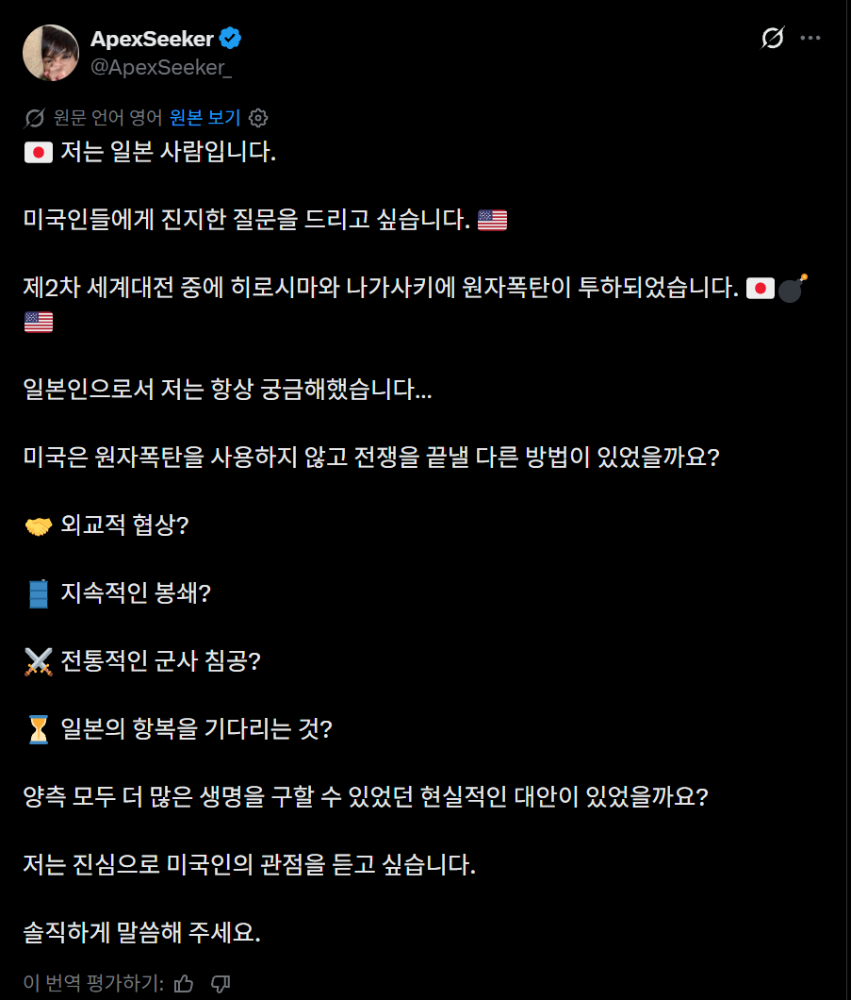
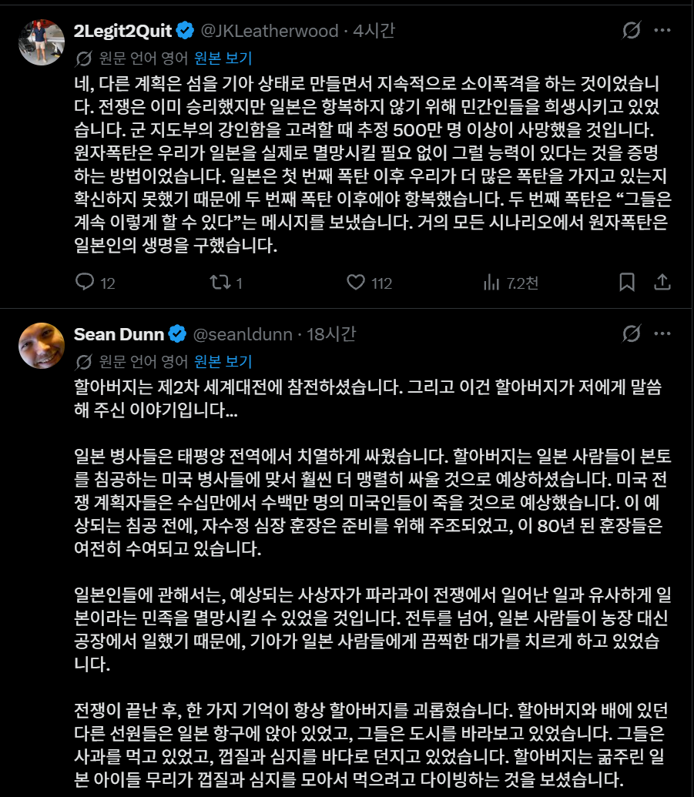
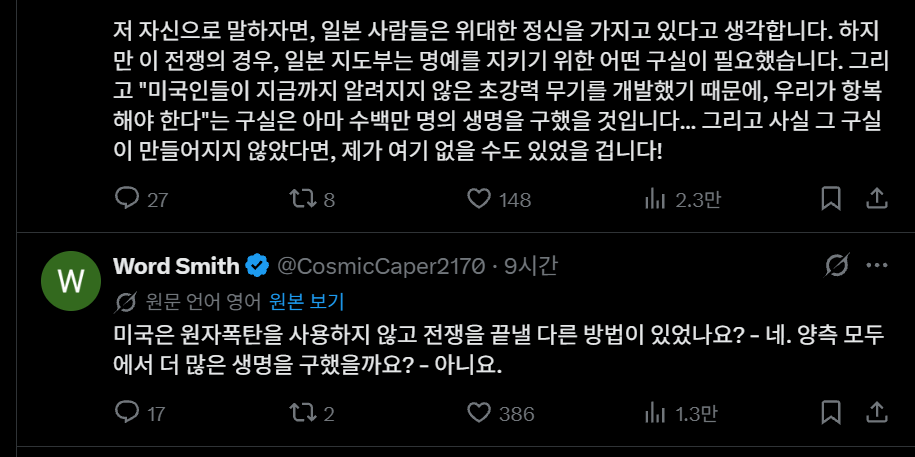
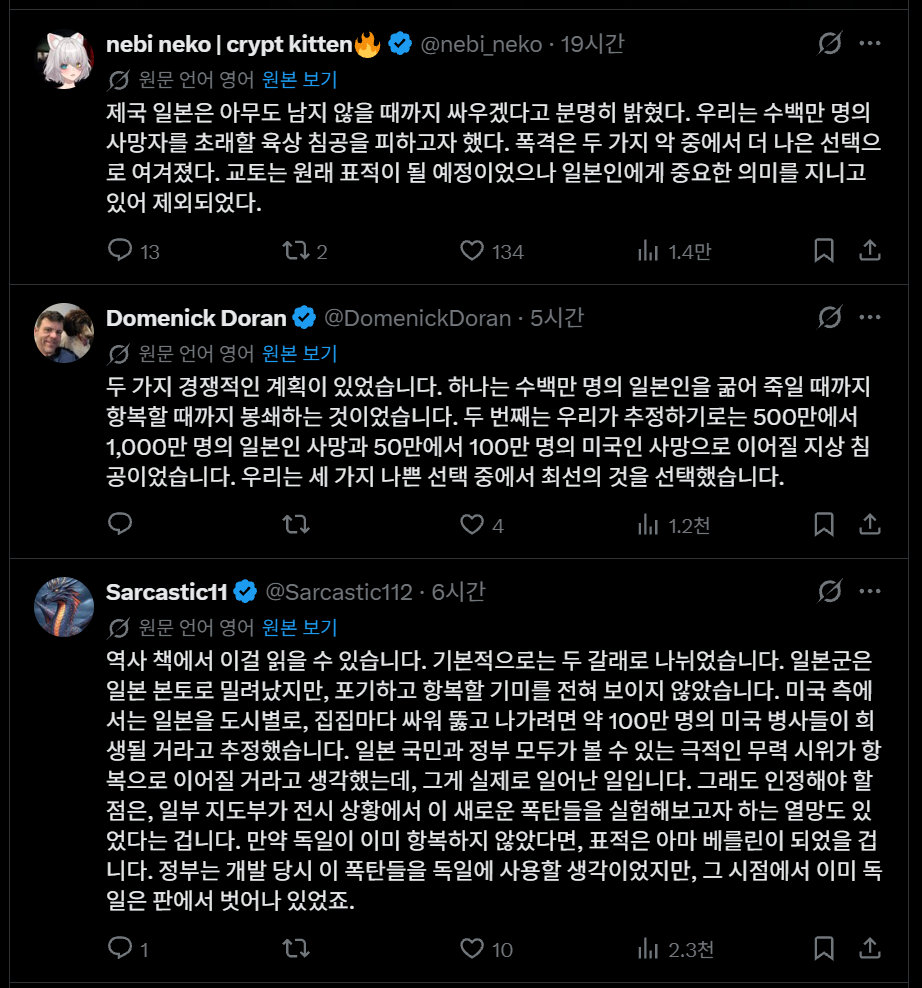
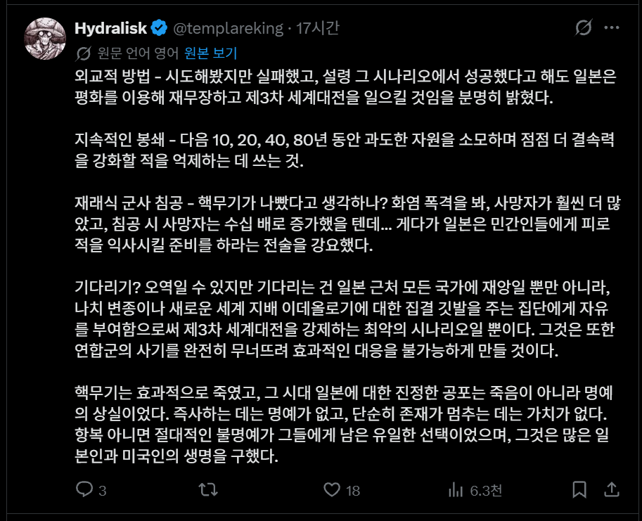
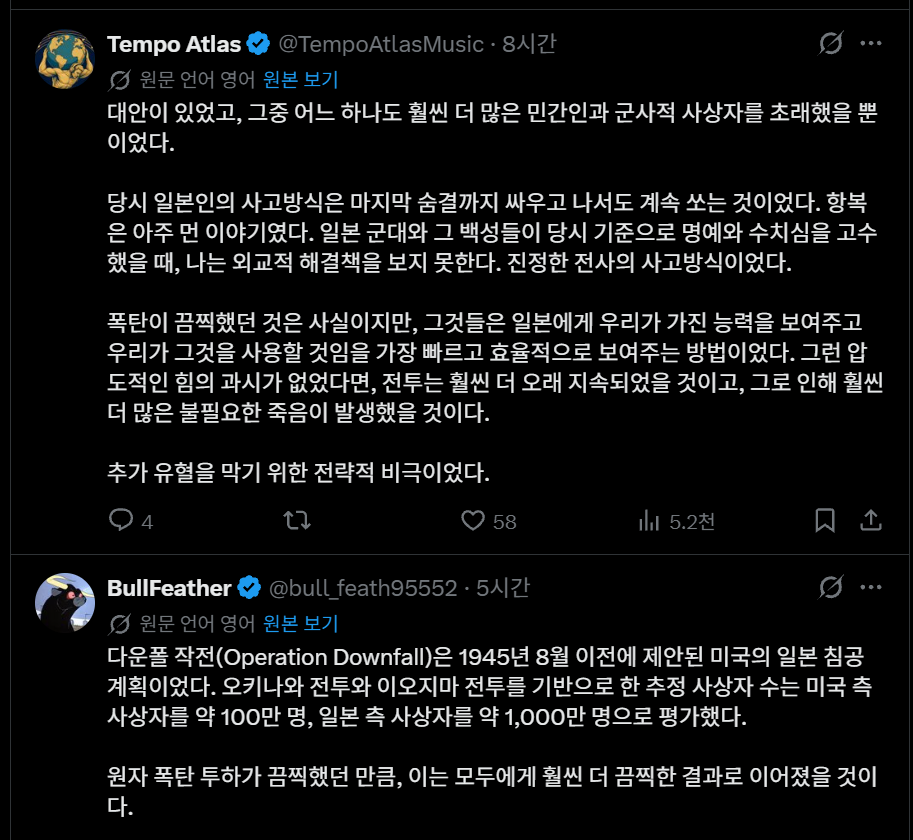
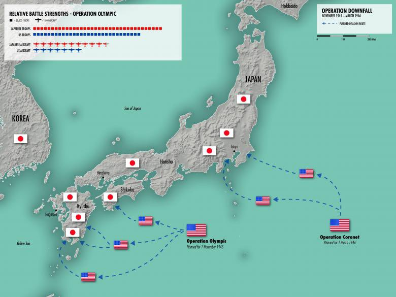
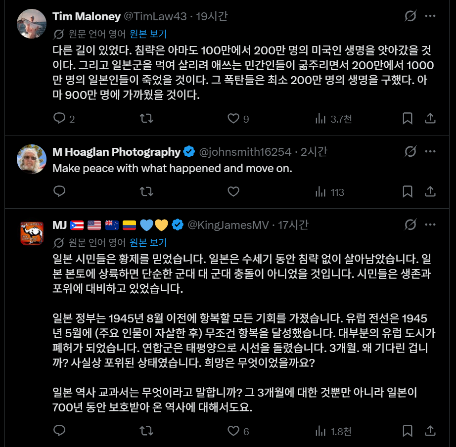
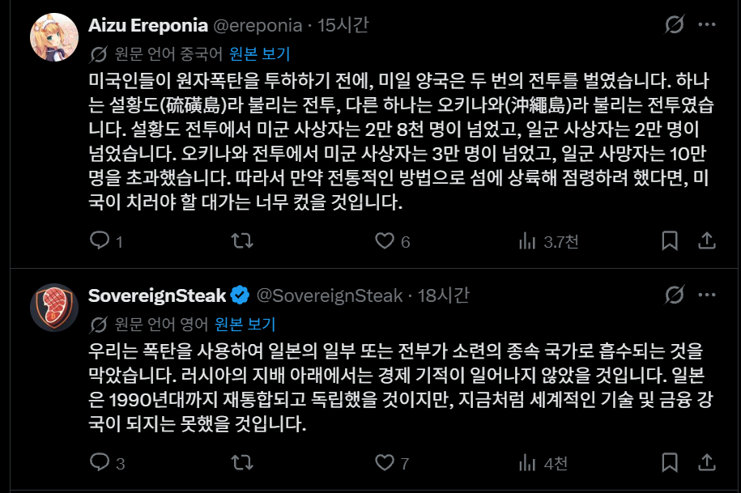
그리고....
와세다 대 명예 교수??? 참전.
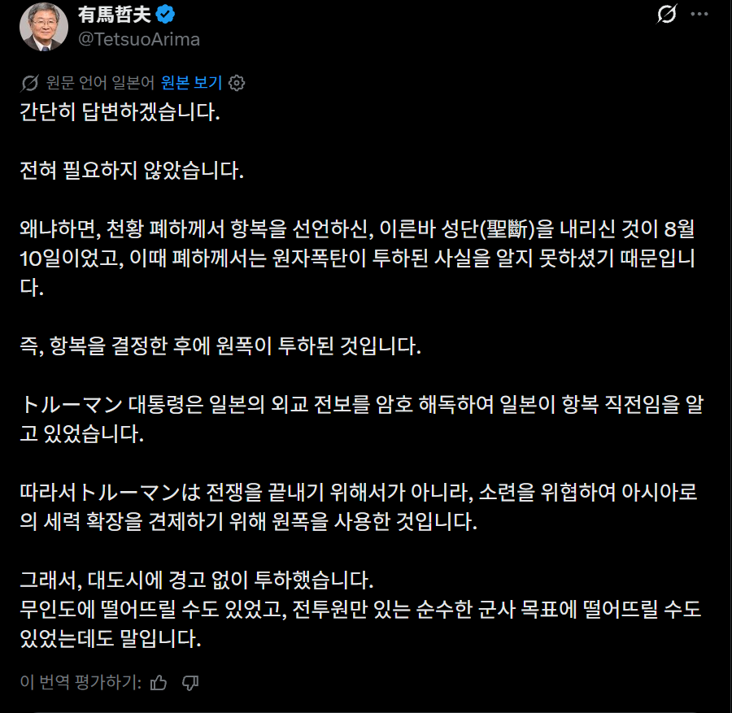
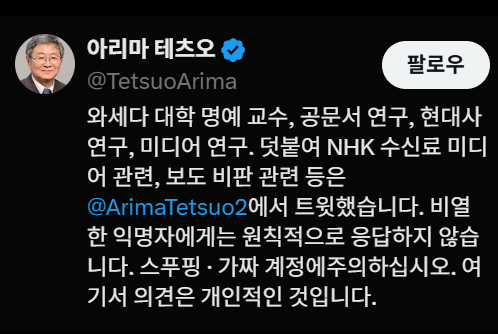
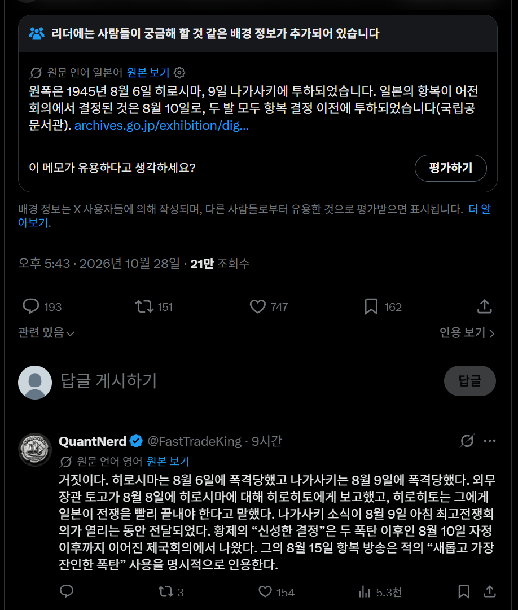
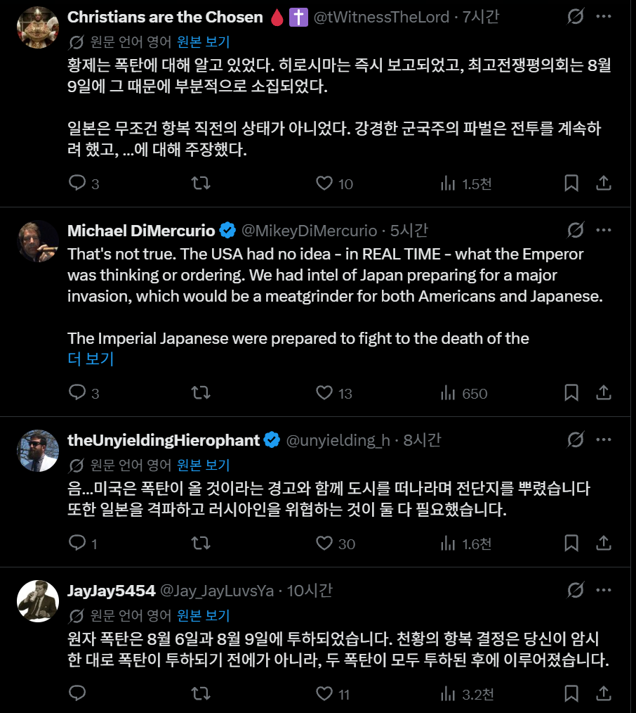
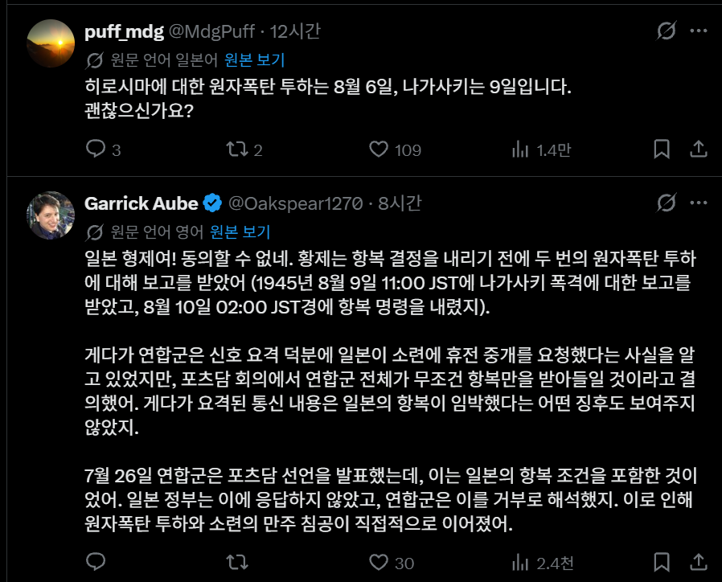
원자폭탄 투하일도 모르는 와세다 대 명예 교수???









그리고....
와세다 대 명예 교수??? 참전.





원자폭탄 투하일도 모르는 와세다 대 명예 교수???
와세다대 명예교수 역알못 됐네 ㅋㅋㅋ
공대 교수인가?
너 공대 교수를 모욕했어
옥쇄하겠다는 놈들 싸그리 다 죽여버리고 일본을 분할통치하는 방법이 있었지
얼마전에 한국이 이제 잘 사니까 일본한테 돈 내놓으라는 소리 했던 그 양반임ㅋㅋ
아 그 병신새끼가 얘였어?ㅋㅋㅋ
핵 안쐈으면 소련군 본토 진입해서 대학살쇼 벌어지는거지 ㅋㅋ
방사능의 악영향이 일류대학 교수 대가리도 와리가리 하게 만드는 거 보니 효과 확실하네
그렇군. 생각하지 못했던 관점이네.
와~ 쎄다
세번째 계획도 있었습니다
'유럽의 고독에서 살아남은 빨갱이들이 일본에 상륙하는 것'
실제로 8월 폭풍작전이 실행중..
핵 안 쏠 수도 있긴 했는데 핵 안 쐈으면 일본인들이 훨씬 더 많이 죽었겠지
일본에 떨어진 2개의 원자폭탄으로 사망한 사망자는 히로시마 사망자 추산 9만~16만 6천 명. 나가사키 사망자 6만~8만으로 최소 15만~25만의 사망자가 났다고 알려져 있음. (이후 방사능으로 인한 사망자를 제외한 숫자)
그런데 난징 대학살에서 죽은 사람들은 최소 10만 명 최대 30만 명으로 추산됨. 이는 일본군이 불태우거나 양쯔강에 던져버려서 시신을 확인할 수 없었던 희생자의 수는 포함되지도 않은 수치임. 물론 일본은 최소 사망자를, 중국은 최대 사망자를 주장하고 있음. 일각에선 난징시가 사람이 그렇게 많냐라며 희생자 수가 뻥튀기되었다고 주장하는 사람들도 있는데, 학살은 난징시뿐만 아니라 인근 위성도시에서도 일어났음. 당시 일본군은 100인 참수베기 경쟁 같은 거나 하면서 핵폭탄 한발만치의 민간인을 자기들 손으로 학살함.
관동대지진때 죄 없는 조선인들의 학살도 극심했음. "조선인이 우물에 독을 풀었다"라고 루머가 퍼져서 조선인들이 일본의 자경단과 군경에 의해 학살당한 사건으로 유명함. 처음에는 약 6천여 명이 사망했다고 알려졌는데 (일본에서는 2~3백여 명 정도라고 주장했음), 2013년 강효숙 원광대 교수가 당시 독일 외무성의 자료를 분석한 결과 최대 2만 3천여 명의 조선인들이 일본인 자경단과 경찰, 군인에 의해 조직적으로 살해당했다는 보고를 분석해서 발표함. 일본은 당시까지 학살이 우발적으로 발생한 것이었으며 군경의 개입은 없었다고 주장했으나 학살에 조직적으로 참여한 증거도 발견됨.
태평양 전쟁때 일본군의 학살도 엄청났음. 일본군은 미군과 전쟁하다가 질 것 같으면 현지 민간인들이 비밀을 누설할 수 있다며 자살을 강요하거나 학살했는데, 사이판 전투 시 민간인들을 죽이거나 자살시킨 민간인만 2만여 명임. 또한 1945년 필리핀에서 퇴각하던 일본군은 당시 필리핀에 남아 있는 시민들이 미군에 협력적이라고 판단, 미군에 대한 협조를 원천 차단하기 위해 이들에 대한 학살과 약탈과 강간을 자행함. 이 학살로 마닐라 내의 건물 30%가 파괴되었고 민간인 약 12만 명이 사망했음. 하지만 일본 넷우익 들은 아직도 '미국이 학살하고 일본에게 책임을 뒤집어씌웠다'라고 주장하고 있음.
자국 내 전투인 오키나와 전투때도 마찬가지였음. 당시 일본군은 미군을 오키나와에서 최대한 막아서 본토 상륙을 막는 전략을 세웠는데 이러한 작전을 세운 배경은 당시 일본 정부나 다른 국민들은 오키나와를 일본 땅이지만 식민지, 그러니까 본토 국민보다 한 단계 격이 낮은 사람들이라고 생각했기 때문임. 한마디로 오키나와를 버리는 패로 사용한 것임. 물론 이때 미군의 공습으로 인한 민간인 사망자들도 많았지만 일본군의 민간인 총알받이 옥쇄 강요와 자살 강요도 극심했음. 결국 이때 민간인 약 12만 명 이상이 사망했고. 이걸 보고 치를 떤 미군이 더 이상 미군의 피해를 줄이기 위해 핵폭탄 투하를 결심할 계기가 되었다고 보는 견해도 있음.
웃긴 건 이 오키나와 전투와 관련해서 일본 정부가 고교 교과서에 '일본군이 집단 자결을 강제했다'는 표현을 삭제하기로 한 적이 있었음. 이 교과서 말대로라면 주민 스스로가 알아서 자결을 선택했다는 얘기가 되는 것임. 이 사실을 알게 된 오키나와 주민 10만 명이 시위를 벌인 적도 있었음.
이정도면 핵폭탄이 두 방 정도밖에 떨어지지 않은 걸 다행이라고 생각해야 하는 거 아님? 아니면 '아니 굳이 핵폭탄 안 써도 민간인들을 이렇게 많이 죽일 수 있는데 환경오염되는 핵폭탄을 굳이 왜 씀?' 뭐 이런 뚯인가?
핵폭탄은 활인폭탄이라고 할 수 있지... 일본의 항복 예정이었다는 근거없는 주장이고 1억 총 옥쇄를 주장한게 팩트인데 수백 수천명을 희생시킬 일본정부로부터 구해낸거지 과정에서 미처 구하지 못한 10만명만으로 비난하기엔 좀..
내로남불 역사교육부터 제대로 해야되는 이유
교수 수준 보소. 여윽시 일본은 교육이 불법이구나
더 맞았어야
몰락작전 햇으면 일본은 지굼 필리핀수준임
그록한테 도움외치는거 어디감ㅋㅋ
아쉽긴해. 핵으로 인한 항복보다 재래식으로 항복시켯으면 더많은 일본인과 인프라파괴로 인해서 일본이 발전해도 좀더 약하게 발전햇을텐데
일단 고려한건 미군 희생정도도 있었음 폭격을 해도 육군 진입해여하는데 미국은 동남아에서 악몽이 있음
둘째는 소련이 한반도에 너무 빨리들어왔음 이는 미국 계획과 달라서 일본 항복시키고 미국도 한반도로 들어가야 하는 상황이 생긴거임 그래서 비장의 무기를 바로 꺼낸거
이럼 항복을 받아내기 위해 천왕을 이용한것도 있는데 그래서 원 원폭 투하 목표였던 교토를 제외해줌 일본이라는 나라 자체를 뭉개려 생각했다면 교토 때려버리는게 최선
그록 이 병신한테 원자폭탄이 며칠에 떨어졌는지 알려줘
전쟁을 끝낼 (항복할) 명분이 필요했다 이거 공감되네
아직도 이거 갖고 개소리가 난무하는 걸 보면 왜나라 교육이랑 학계는 엄청나게 성공한 거임
역시 선전포고 지연배송 날린 다음에 선빵 치고나서 아 선전포고 미리 보냄ㅎㅎ 이지랄 하는 나라 답게
항복도 아 원래 항복하려고 마음 먹은게 원자폭탄 터지기 전이라니까~~
저런 것들 애비에미들까지 싸그리 죽였어야 했는데 그러지 못해서 저런 것들이 튀어나왔네. ㅆㅂ
지랄 핵 맞고도 죽어서라도 싸운다고 지랄한 일본이
소련 내려온다니까 소련이 잔혹하게 대우할거라며 항복함
핵처맞고도 정신 못 차린게 일본임
이거 트윗 쓴 계정 보니까 봇인거 같은데? 뭐 이렇다할 답글 피드백은 없고 미국한테 진지한 질문 이지랄로 전쟁 관련 내용 오지게 올림
좀 의심해 볼 필요는 있지. 핵 투하 결단이 (아마도)인종주의적이지 않다는 전제를 해 두고 이야기를 하자면 이럼. 그러니까 그들이 히틀러가 너무 빨리 자살하는 바람에, 독일이 너무 빨리 망하는 바람에 그곳에 핵을 떨어트리지 못한 것이며, 시간이 좀 더 있었다면 히틀러 대가리 위에 핵을 터트리려고 어깨춤을 추며 달려갔을 거라는 전제 위에서 하는 말인데.
먼저 목차만 정리해보자면 1. 당시 미국 민주당 정권의 상황, 2. 핵무기 개발의 배경, 3. 이 둘 위에서 나오는 잠정적 추론.
1. 당시 미국 민주당은 F.D.R이 사상 초유의 정신나간 4선 도전에 성공하고 그만 뒈져버린 상황이었음. 그리고 부통령으로 트루먼이 대통령직을 인수했고. 그리고 이 때 대선 투표율 추이를 보면, 3선부터는 공화당 후보였던 듀이와는 거의 차이가 나지 않음. 3/4선에서 55대 45인데, 미국의 선거방식(대의원/승자독식제)을 생각해본다면 실제 유권자의 투표 비율은 정말로 근소할 가능성도 높지. 즉, 이 때의 민주당은 정권 유지 가능성이 아주아주 불투명한 상황이었음. FDR이 뉴딜 연합을 조직하고, 대공황을 극복하고, 딕시를 짬처리해낸 사람인데도 불구하고 55대 45다? 그렇다면 FDR이 아니라면...? 하는 물음표가 모두의 머리 위에 떠오르는 시점이지. 요컨대 민주당은 자기들 스스로 생각하기에도 너무 오래 해먹었다는거야.
2. 핵무기 개발은 그 특성상 자금을 어디다 쓰고 있으며, 효과가 어떻게 되며, 실험은 어떻게 했는지, 실제로 만들기는 했는지, 아무튼 그 모든 것들이 베일에 가려져서 공개할 수가 없는 상황이었음. 그야 특급 군사기밀이니까. 장부상에 어마어마한 액수의 달러가 "아무튼 어디다 썼음"이라고 표시되어 있는데 그게 정확히 어디에 썼는지 대중에 공개할 수가 없다? 야당(공화당)이 물어뜯기에 이렇게 최적화된 재료가 없지. "FDR이 미쳐서 무슨 기적의 무기, 하버쿡 쉽을 진짜로 만들기라도 했습니까?"같은 비아냥이나 조롱을 날려대도 할 수 있는 말이 없으니까. 즉, 핵무기 개발의 성과를 가시적으로 보여주지 못한다면, 이런 대단한 무기를 만들었음을 세계 만방에 알려주지 못하고 전쟁이 끝나버린다면 승전 정권의 메리트가 역으로 작용할 가능성도 있었다는 거야.
3. 그래서 핵은 써야만 했던 무기였음. 단지 쓰기 전에 "왜 써야만 하는가?"를 물었을 때 그 계산서가 저 트위터에서 떠들어 대듯 무슨 사람이 덜 죽고 어쩌고 저쩌고 하는 휴머니즘적인 이유일 가능성은 그다지 높지 않다고 보는거지. 오히려 숨겨진 다른 계산서, 정권 유지라는 계산서가 정답일 가능성이 높다는 뜻이고. 홀시(그가 꼴통만 모아놓은 해군집단 내에서도 유별난 꼴통이었다는 사실은 차치하더라도)의 Kill Japs, Kill Japs, Kill more Japs의 동어반복 왈왈거림이 "명언"으로 둔갑되어 아직까지 유통되고 있다는 사실만 봐도, 최소한 미국인은 일본인의 생명에는 그다지 관심이 없었을 가능성이 더 크지 않냐. 그리고 마찬가지로 미국인의 생명에도 그다지 관심은 없었을 것인데, 20세기 초중반의 미국은 보너스 아미나 뭐 파업한다고 군대를 끌고와 학살하고 흑인으로 인체실험을 하던 나라였기 때문임. 그리고 일단 그런 정권 보존의 이유로 쏴버린 다음, 자신을 양심적이게 포장하면서 남들을 납득시키기 위해 찾아모은 이유들이 "사람이 덜 죽는 방법" 같은 헛소리 아닐까 하는 의심이고. 여기를 봐도 저기를 봐도 아무튼 제시되는 모든 가능성이 "핵을 쏘세요!"라고 명령하고 있었다고 말하는 건, 단지 그 사람이 핵을 쏘고 싶기 때문일 것이라는 일종의 정신분석적 관점임.
핵폭탄 두발 맞고도 아직 관동군 100만 있으니 만주랑 조선은 안된다고 버티려고 했던 놈들인데 좀
오히려 핵 2방 맞아서 지금처럼 잘 살고있는거 아님?
고맙다고 해도 모자랄 판에 계속 저걸로 피해자 코스프레 하고있네
관동 대지진 때 도와준 미국을 선전포고도 없이 선제 타격하지 않았을 다른 방법은 없었나요?
거대한 중국+미국지원 상대로 중일전쟁서 20년간 뻐팅기던 관동군이
소련군 진군에 5일만에 한반도 까지 밀려버리고 북해도로 필사적으로 빤쓰런 하게 만든
독소전쟁 땜에 개 빡쳐서 포로를 두지 않는 피에 굶주린 미친놈들이 북해도 상륙작전을 준비한다는 소식에